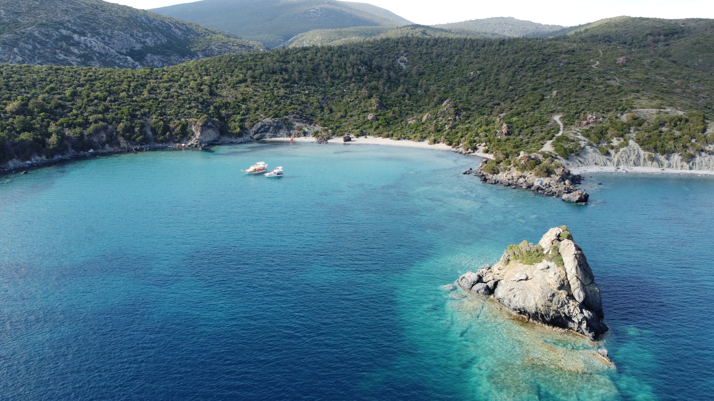
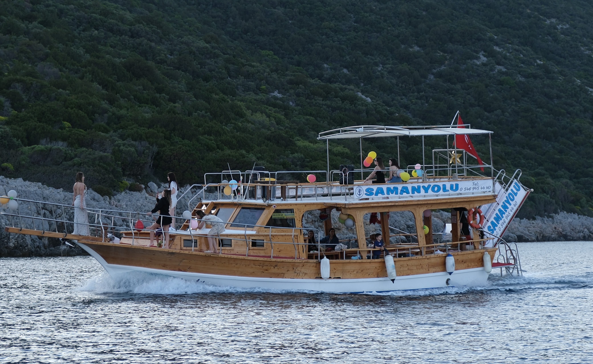
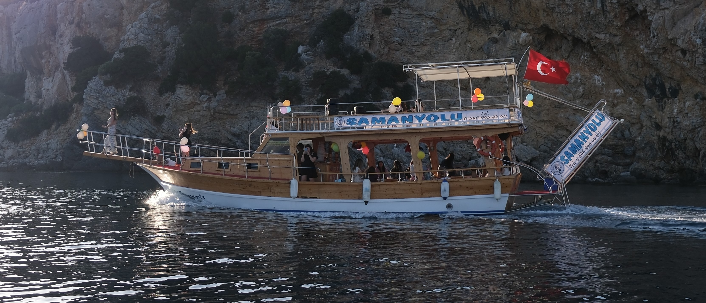

GALERİ








Teknemizde sizlere zengin bir menü seçeneği sunuyoruz. Lezzetli yemeklerimizle deniz keyfinizi tamamlıyoruz.
Teknemizde keyifli bir atmosfer için müzik sistemi bulunmaktadır. İstediğiniz müzikleri dinleyebilir ve eğlencenin tadını çıkarabilirsiniz.
Teknemizde ücretsiz Wi-Fi erişimi bulunmaktadır. İnternet bağlantısı sayesinde haberleri takip edebilir veya sosyal medyada vakit geçirebilirsiniz.
Teknemizde ihtiyacınız olan her türlü donanım bulunmaktadır. Güvenliğiniz ve konforunuz için eksiksiz bir donanım sunuyoruz.
Adres: Sığacık, balıkçı barınağı, 35460 Seferihisar/İzmir
Telefon: 0546 945 4440
E-posta: info@ornek.com
Bize ulaşmak için Instagram üzerinden takip edebilirsiniz.
Instagram'da Takip Et Hemen Ara